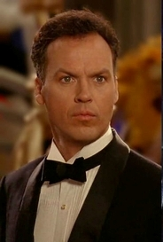
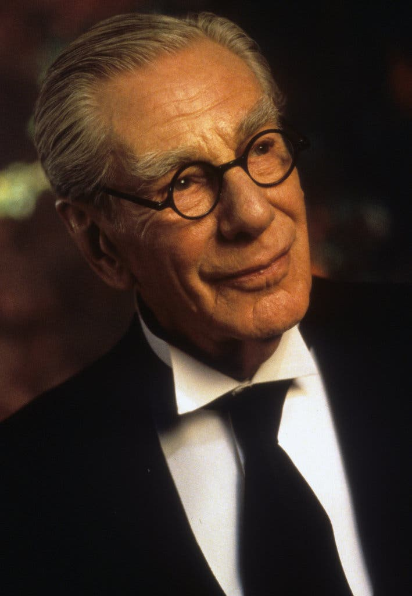
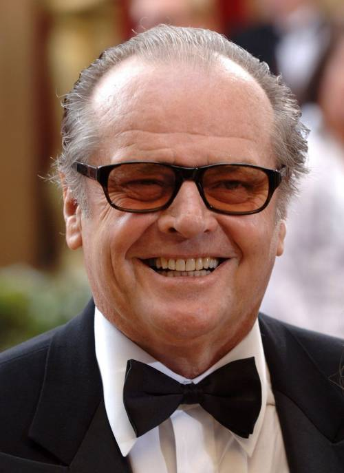
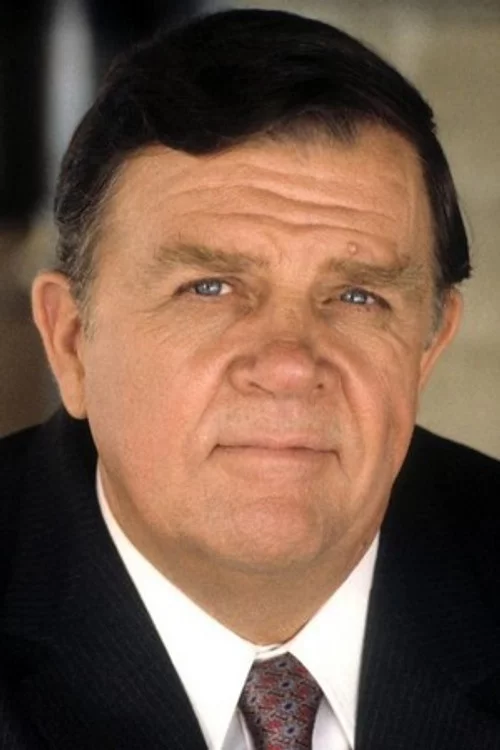
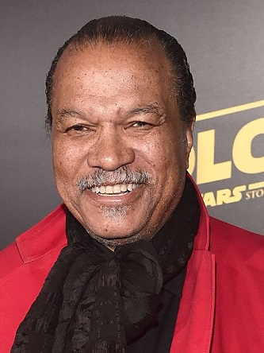
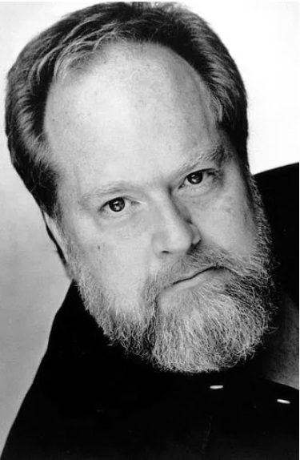

Безстрашна фотожурналістка, яка приїжджає в місто для розслідування чуток про Бетмена і закохується в Брюса Вейна.
У центрі сюжету стоїть таємничий захисник міста, його вірний помічник та представники преси, які намагаються розкрити особу людини-кажана.

Майкл Кітон — Брюс Вейн / Бетмен.
Кім Бейсінгер — Вікі Вейл.
Безстрашна фотожурналістка, яка приїжджає в місто для розслідування чуток про Бетмена і закохується в Брюса
Вейна.

Майкл Гоф — Альфред Пенніворт.
Роберт Вул — Александр Нокс.
Вірний дворецький і наставник Брюса Вейна, який зберігає його головну таємницю.
Головна загроза для міста походить від божевільного злочинного генія та корумпованих босів мафії.

Джек Ніколсон — Джек Нап'є / Джокер.
Джек Пеленс — Карл Гріссом.
Могутній кримінальний авторитет Готема, який спочатку керував Джеком Нап'є.
Трейсі Волтер — Боб (підручний Джокера)
Вірний та мовчазний виконавець найбрудніших наказів Джокера.
Джеррі Голл — Алісія Гант.
Коханка Карла Гріссома, яка згодом стає жертвою безумства Джокера.
Закон і порядок у місті представляють посадовці, які намагаються очистити вулиці від злочинності перед ювілеєм Готема.

Пет Гінгл — Комісар Джеймс Гордон.

Біллі Ді Вільямс — Гарві Дент.
Лі Воллес — Мер Борг.
Очільник міста, що наполягає на проведенні фестивалю попри загрозу з боку Джокера.

Вільям Гуткінс — Лейтенант Макс Екхардт.